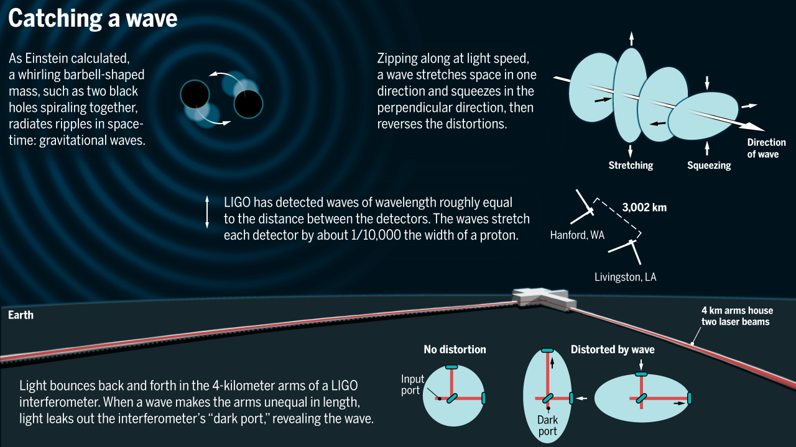

Currently, I am a Ph.D. student at Albert Einstein Institute and Humboldt University. I am working here under the guidance of Prof. Dr. Alessandra Buonanno and Dr. Jan Steinhoff on modelling compact objects and their effect on emitted gravitational waves.
Before this, I did my bachelor's and master's in physics from Indian Institute of Science Education and Research Pune. My master's thesis was under the guidance of Dr. Suneeta Vardarajan on studying the effective field approach to the two body problem in gravity.
Research
(Overview)
The observations by Galileo through his telescopes opened new horizons in our understanding of the cosmos. It allowed us to see celestial objects in ways previously unimaginable, revealing moons around Jupiter, the phases of Venus, and much more. Similarly, the first detection of gravitational waves in 2015 has started a new era of astronomical exploration. It allows us to observe cosmic phenomena, such as black hole mergers and neutron star collisions, that were once beyond our reach, fundamentally altering our understanding of the universe.
The question I aim to address is the following: When two objects such as black holes and/or neutron stars, undergo a binary coalescence, they emit gravitational waves. We detect these waves using our amazing detectors. What information can we obtain about the properties of the two colliding objects by analyzing the detected gravitational waves? Specifically, what insights can we gain about their mass, spin, equation of state, their surroundings, and so on?
What are gravitational waves? [LIGO] How are gravitational waves detected? [GW Open Data Workshop]
 Image credits: [Link]
One fun excercise is to hear the pleasing melody of graviational waves after converting them into sound waves. Here [Soundofspacetime] you can listen to the sound of gravitational waveforms emitted by various binary sources.
CAUTION! gravitational waves are not sound waves and this is just a fun excercise.
Interesting articles / lectures on gravitational waves:
| Massive Black Holes Shown to Act Like Quantum Particles | [Link] | (2022) |
|---|---|---|
| Gravitational-wave physics and astronomy in the 2020s and 2030s | [Link] | (2021) |
| Gravitational waves, Einstein's ripples in spacetime, spotted for first time | [Link] | (2016) |
| Gravitational Waves: A New Era of Astronomy Begins (Panel discussion at World Science Festival) MODERATOR: Brian Greene, PARTICIPANTS: Barry Barish, Nergis Mavalvala, Frans Pretorius, David Shoemaker, Rai Weiss |
[Link] |
(2016) |
Recent relevant reviews / snowmass papers:
| Gravitational Waves and Scattering Amplitudes | [2204.05194] |
|---|---|
| Post-Minkowskian expansion from Scattering Amplitudes | [2203.13024] |
| Classical Gravity from Scattering Amplitudes | [2203.13025] |
Research
(Details)
Currently, I work on the studying astrophysical compact objects and gravitational waves emitted by them using the techniques of quantum field theories and scattering amplitudes. This problem is interesting because the recent direct detections of gravitational waves by LIGO and Virgo observatories have proved to be a probe for the physics of celestial objects like black holes and neutron stars. Such detections have the potential to unravel the mysteries of cosmic origins, equations of state of compact objects and will prove to be a test to the theory of general relativity. On the other hand, the framework of Quantum field theory has proven to be very successful at predicting physical behavior to high accuracy and precision and is the basic language of modern theoretical physics. Moreover, the techniques of scattering amplitudes provide us with several tools which make the calculation of the physical observables systematic and insightful.
In my master's thesis, I studied the method of Effective Field Theories (EFT) used to model the gravitational waves emitted by various binary sources. Such sources, due to their non-relativistic nature, are analytically studied using the techniques of post-Newtonian (PN) approximation by perturbatively expanding in orders of orbital velocity over the speed of light. I followed the calculation of Einstein-Infeld-Hoffmann (EIH) Lagrangian, which is the 1PN correction to the two body gravitational potential. Then, to consider the effects of the electromagnetic charge of the constituents of the binary system, I newly derived the corrections to this 1PN potential by adding photons in the formalism which can be found here [arXiv:2009.11107]. To study the effects of the spin of binary constituents on the waveform, I reviewed the calculation of the Spin-Spin, Spin-Orbit, and Spin-squared effective potentials up to 2PN. I also followed the calculation of the Burke-Thorne radiation reaction force at 2.5 PN, using the Schwinger-Keldysh formalism of open quantum field theories.
Currently, for my Ph.D. thesis, I am working on computing state-of-the-art higher-order effective potentials. Such potentials are important as they are used to compute accurate theoretical waveform templates which are compulsory ingredients for data analysis and reliable physical interpretation of the gravitational wave signals. I am developing a fast and efficient Mathematica routine for the automatic computation of Feynman diagrams and the corresponding integrals using the multi-loop techniques of quantum field theories [Poster at QCDmeetsGravity2022]. Using this I have performed the following analyses:
- Spin-orbit NNNLO (at 4.5PN): [arXiv:2209.00611]
- Quadratic-in-spin NNNLO (at 5PN): [arXiv:2210.09176]
- Dynamic tides at 2PN: [arXiv:2304.02030]
- Dynamic and adiabatic tides at 3PN: [arXiv:2308.01865]
Pastime
I enjoy solving simple problems in 0+1 dimensional quantum field theories or a.k.a. Quantum Mechanics (thanks to Dr. Arnab Rudra, who introduced me to this). Here is the [link] to the webpage of QFT 1 course by Arnab where he discusses about this formalism in detail. The challenging assignments on his page are very interesting and I would urge you to have a look at them.
I enjoy coding while solving physics problems. Here I aim to put all the fun things that I did using Mathematica.
Few of the nice packages of Mathematica are [Quantum Notation] for quantum mechanics, [FeynCalc] for computing amplitudes, [xTensor] for tensor algebra, and [S@M] for massless spinor helicity algebra.
Here are few of the projects that I was involved in,
| Harmonic oscillator | [GitHub] |
|---|---|
| Toy Standard Model at 1 Loop (Building up from simpler models) |
[GitHub] |
| Amplitudes using Spinor helicity | Incomplete |